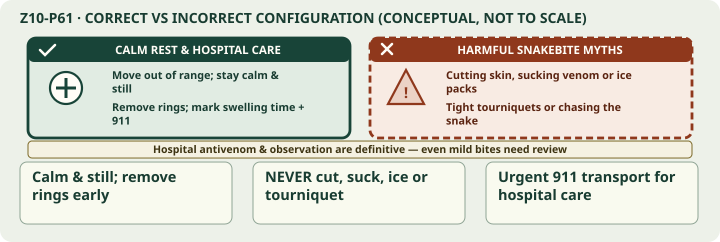

Z10-P61 · Wilderness medicine · New manuscript
Manage suspected venomous snakebites calmly while rejecting harmful folklore
Slow systemic venom spread through calm immobilization and rapid hospital transport while preventing tissue destruction from obsolete folklore.
When it applies · Suspected venomous snakebite (e.g., rattlesnake, copperhead, cottonmouth) during outdoor travel.
Equipment · Watch, pen to mark swelling border/time, splint/sling for calm rest, and emergency communications.

Actions
- Move out of striking range, call 911 and keep the bitten person at rest. A photograph is optional only from a safe distance and without delaying care. Never try to catch or handle the snake.[M13, T02]
- Remove rings, watches, bracelets, and tight clothing near the bitten limb immediately before rapid swelling begins, keep the limb comfortably supported at roughly heart level (or per dispatcher/toxicology guidance), and mark the leading edge of swelling with time.[M13, M20]
- NEVER cut the bite wound, suck venom by mouth or suction kit, apply ice/cold packs, wrap a tourniquet or tight constricting band, or apply electric shocks—all worsen tissue loss and delay hospital antivenom.[M13]
Failure recognition · Cutting X-marks over fang punctures and tying a tight belt above the ankle while hiking rapidly back to the trailhead.[M13]
Verify · Confirm rings/tight items removed, patient resting calm and still, swelling edge marked with time, and urgent hospital transport active.[M13, M20]
Stop or change course · Every suspected venomous snakebite requires emergency hospital evaluation and observation—even if initial pain seems mild ("dry bites" still need clinical monitoring).[M13, T02]
Evidence and editorial notes
- M13 · CDC NIOSH · Venomous Snakes at Work (2024)
- Section: First aid and prohibited actions · Conditions: Suspected venomous snakebite in the United States; rescuer safely out of striking range
Support: Call EMS and seek emergency treatment. Keep the person still, remove restrictive items, and do not catch the snake or use cutting, suction, ice or a tourniquet.
Limitations: Snake guidance does not transfer to arthropod stings, foreign protocols or toxin identification. · Conflicting evidence: See A02 claim audit for boundaries.
Editorial note: Hard-stop non-invasive snakebite and venomous-bite protocol. · Specialist reviewer: Medical toxicology and wilderness medicine
Primary source · checked 2026-11-25 - M20 · NIH / MedlinePlus · First Aid Overview (current web edition)
- Section: Lay First-Aid Scope, Kit Readiness, and Documentation · Conditions: Pre-trip kit preparation and remote patient monitoring
Support: Maintain an inspected, unexpired first-aid kit matched to your actual training, keep written patient observations (time, responsiveness, breathing, symptoms, interventions) for EMS handoff, and practice skills in certified courses.
Limitations: Carrying advanced medical instruments without clinical training adds risk rather than capability. · Conflicting evidence: None; aligns with ARC and NPS-K.
Editorial note: Anchors kit sizing, SOAP-style lay observation logs, and scope-of-practice cards. · Specialist reviewer: Wilderness EMS and clinical education
Primary source · checked 2026-11-24 - T02 · American Red Cross · First Aid Steps (current web edition)
- Section: First Aid Steps > Call 9-1-1 · Conditions: Lay emergency response to unresponsiveness, abnormal breathing or severe bleeding
Support: Activate EMS and get needed equipment. Follow dispatcher directions and act within training.
Limitations: Remote locations may delay EMS arrival, requiring sustained stabilization after activation. · Conflicting evidence: None; aligns with NPS-E.
Editorial note: Mandates early emergency activation and dispatcher adherence. · Specialist reviewer: EMS and wilderness medicine
Primary source · checked 2026-11-24
Source lineage · NIH MedlinePlus Bites and First Aid; new manuscript · Classification · New manuscript.